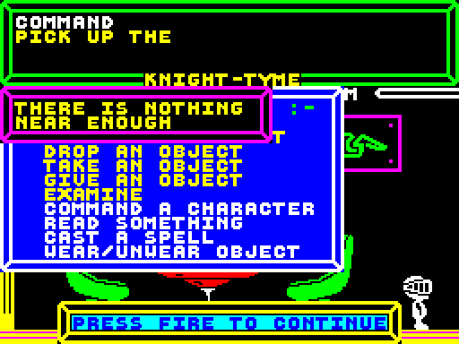

"THERE IS NOTHING IN THIS ROOM" message never shown
In the routine at
29330 that processes Magic Knight's "PICK UP OBJECT" command, the section of code starting at
29339 is intended to count the
number of objects present in Magic Knight's current room. This count of objects is accumulated in the
C register, and after the total (copied into
A) is compared with zero at
29358, a conditional jump occurs to
55192 to display the "THERE IS NOTHING IN THIS ROOM" message window should the
total be zero. Unfortunately this does not work as intended because the
C register is not initialised to zero at the beginning of the count.
The instruction at
29342 (
LD BC,3200) actually initialises
C to 128, so the count can never equal zero. Additionally, this same
instruction should initialise
B (the number of objects to check to determine whether they are in Magic Knight's current room) to 37 as there are 37
objects in the game; instead
B is initialised to 12. So as it stands, this routine only counts the number of objects among the first 12 that are in
Magic Knight's current room, and adds this total to 128. Therefore it is clearly impossible for the count to hold any value outside the range 128 - 140
(i.e. it is never zero), so the "THERE IS NOTHING IN THIS ROOM" message is never shown. Instead, the "THERE IS NOTHING NEAR ENOUGH" message is shown:

The offending instruction should actually be LD BC,9472.
To fix, and ensure that
B and
C are initialised to 37 and 0 respectively:
POKE
29343,0
POKE
29344,37
This bug is also present in Spellbound
Too many objects are checked
Another bug, related to the one above, involves the routine at
29330. The instruction at
29374 loads
B with 50, in preparation for a loop
iterating over all objects' positions, however there are only 37 objects in the game. As a result of this bug, the code that checks the positions of
objects runs over the end of the objects' current positions table at
25286 and into the current planetary data table at
25397. Due to the nature of
the data stored from
25397 onwards, it seems that a conflict (i.e. a false match with an "object") is unlikely, so in most circumstances this bug will
not manifest any symptoms.
Examine USS Pisces
The instruction at
30199 is intended to check whether or not Magic Knight is aboard the USS Pisces when attempting to examine the starship. If Magic
Knight is not aboard the ship, a message window should be displayed ("YOU CANNOT EXAMINE THE USS PISCES IF YOU ARE NOT ABOARD THE MAIN SECTION OF THE
SHIP"). In order to check whether or not Magic Knight is aboard the USS Pisces, his current room's index is compared against the number 12 which is the
index of the McTablet Food room on Starbase 1. However, if Magic Knight is in the room to the left of this (The Transporter Room, Starbase 1, index 11)
then the check is passed even though he is not aboard the starship. The instruction here should instead check Magic Knight's current room index against
11, i.e. it should be
CP 11, not
CP 12.
Extra flag set
The routine at
31312 processes the command to cast a lightning bolt. When Magic Knight casts a lightning bolt at the Control Column, the instruction
at
31374 (
OR 3) is intended to set the tyme-machine-charged flag, however as well as doing this it also sets the barriers-removed flag. The
tyme-machine-charged flag is stored in bit 1 of the byte at
23403, so the instruction should be
OR 2.
Incorrect window type
When Magic Knight has his accident with the glue, photograph and blank ID card, an information window is displayed explaining that happened. However
this window is not really an information window - it's a menu window! The instruction at
34463 calls the routine for drawing menu windows and as a
result the hand cursor is also drawn. This isn't really noticeable though, since immediately after drawing the window and hand cursor, the text is
printed, overwriting the hand cursor graphic.
Starfield rendering
The instruction at
36301 is
LD C,A, however it appears the correct instruction should be
LD A,C as we are checking (in
A) that the
x-component of a star's direction is non-zero when its y-component has already been checked as zero. As it is, the value in
A is not modified from
instruction at
36294 where it is set to the y-component. In the existing code, the value of
A is set at
36294, then at
36299 a conditional
jump occurs if the value in
A is not 70. If the jump does not occur, then the (same) value in
A is loaded into
C, then another conditional
jump occurs only if the (unchanged) value in
A is equal to 128 (which is can't be, because this instruction is only reached if
A is 70!)
To fix, change the instruction at
36301 from
LD C,A to
LD A,C:
POKE
36301,121
This bug is also present in Spellbound
Inconsistent floor colour
Room number 04 ("CARGO HOLD", USS PISCES) has its floor drawn with attribute 86 (yellow INK, red PAPER, BRIGHT) whereas all other rooms on the USS
PISCES have their floors drawn with attribute 94 (yellow INK, magenta PAPER, BRIGHT).
Pass through airlock wall
Magic Knight can pass through the wall separating the Airlock from the Life Boat / Control Column.
To fix, increase the x-coordinate at which Magic Knight can be moved into a new room to the right:
POKE
28286,235